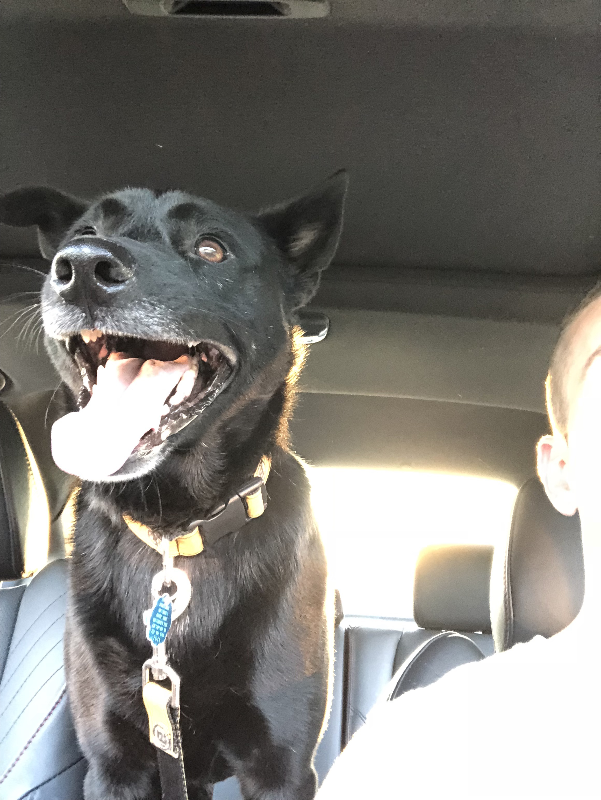
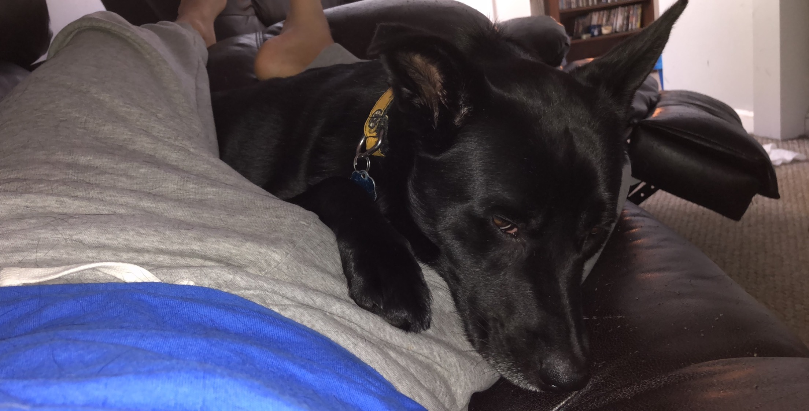
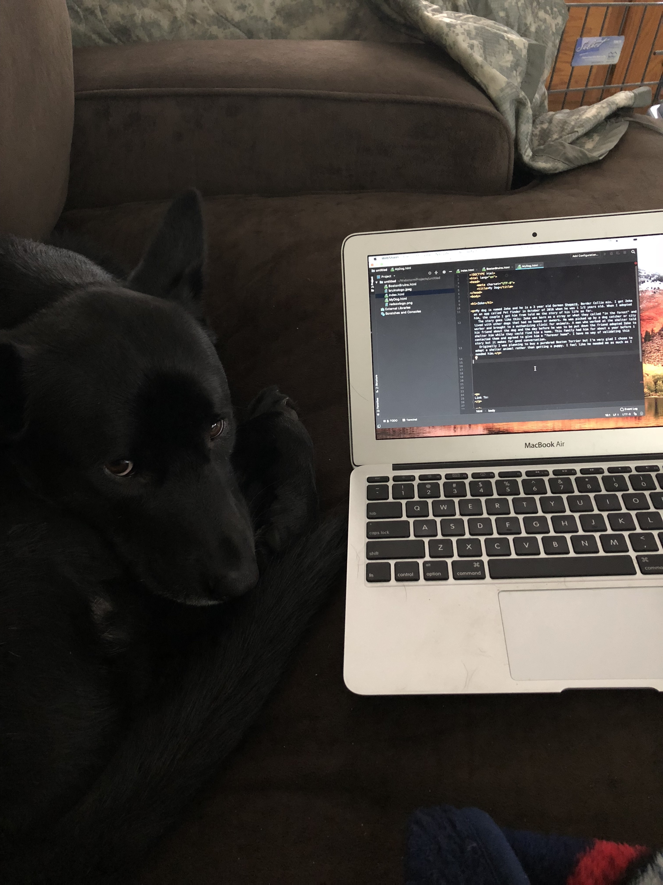

My dog is named Zeke and he is a 3 year old German Sheperd, Border Collie mix. I got Zeke on an app called Pet Finder in October of 2016 when he was 1 and a half years old. When I adopted him, the couple I got him from told me the story of his life so far. The story goes like this: Zeke was born as a stray or what they called "in the forest" and lived with other dogs that had no homes or owners. He was picked up by a dog catcher or city worker and brought to a euthanizing clinic for animals. A man who worked at the shelter told his friend about the dog and the day before he was to be put down the friend adopted Zeke to shelter him while they could find him a home. This family had him for about a year before i contacted them and agreed to give him a "forever home". I have no way of validating this story but it makes for good conversation. Originally I was planning to buy a purebred Boston Terrier but I'm very glad I chose to adopt a shelter animal rather than getting a puppy. I feel like he needed me as much as I needed him.


And here's a picture of what Zeke thinks of this website and coding:

Link To: